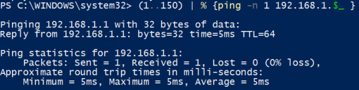
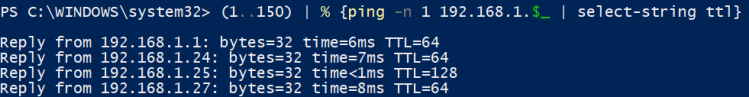

Loops
Powershell loop statements
• for()
• foreach()
example PS> $services = Get-Service
PS> foreach ($service in $services) { $service.Name }
• foreach-object
example: PS> Get-Service | ForEach-Object {$_.Name}• while()
• do {something} while()
• do {something} until()
print and count range of numbersexamplesPS>(1..5) #generate range of numbers
PS>(1..5).count #count the number of object generated
PS> (1..150) | % {ping -n 1 -w 100 192.168.1.$_ }
PS> (1..150) | % {ping -n 1 -w 100 192.168.1.$_ | select-string ttl} -n 1 → ping one time
-w 100 → waiting no more than 100 milliseconds for a response from target IP address
Select-String ttl → grep for lines with "ttl" (case-insensitive)
 Tcp port scannerexample:very slow 20 second for port scanned( in this example 81 and 444)
PS> $ports=(81,444);$ip="192.168.147.1"; foreach ($port in $ports) {try{$socket=New-Object System.Net.Sockets.TcpClient($ip,$port);} catch{}; if ($socket -eq $null) {echo $ip":"$port" - Closed";}else{echo $ip":"$port" -Open"; $socket = $null;}}